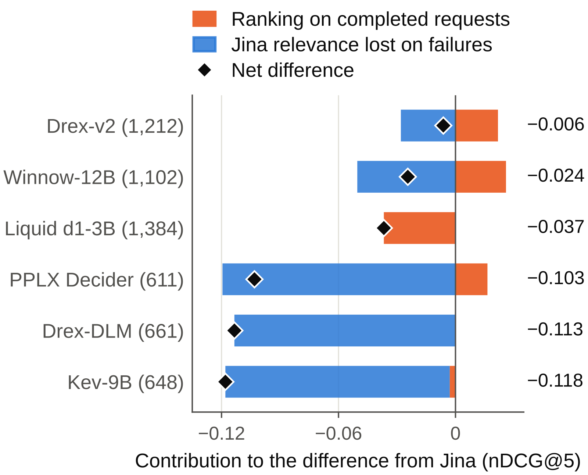
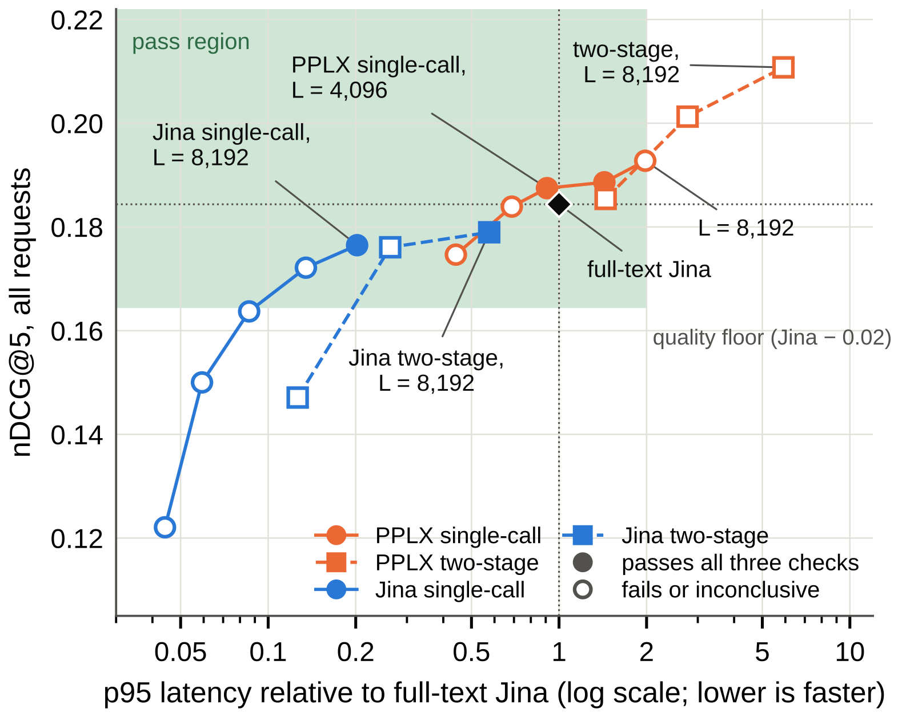

SHARE
If a team is thinking about replacing the reranker in its RAG pipeline with a newer large model, this paper's message is blunt: tune the reranker you already run first, because the case for replacement usually does not hold. The authors compare the 27B decision model PPLX Decider with the 0.6B dedicated reranker Jina v3.5 on identical candidate lists. A decision model is a model interface that returns scores or choices instead of long free-form text. With default settings PPLX returns a valid result for only 44.1% of BRIGHT requests. On completed requests alone it beats Jina by 0.0371 nDCG@5, but counting failures as zero it trails by 0.1031. After truncating candidate text it catches up with Jina, yet it peaks at about 50 GiB of GPU memory against 4.3 GiB for Jina.
The core idea in one sentence: when evaluating a reranker replacement, judge reliability, ranking quality and latency together on the same requests, and never drop failed requests from the average. In my view the value here is the evaluation method rather than any model. It separates "ranks well" from "can ship", and any team planning to swap a reranking model can copy it.
What question does it answer?
A RAG system typically retrieves about 20 candidates and uses a reranker to pick the top five for the generator. Rerankers improve quality but add latency when candidates are many and long. Decision models pick the best options from a set in one forward pass, so perhaps they can do the same job faster. The authors treat "faster" as a hypothesis, since a decision model still has to read the query and every candidate.
An illustrative scenario shows why failures must count. Five requests: Jina answers all of them, while the new model errors on two because their inputs are too long.
| Request (illustrative) | Jina | New model |
|---|---|---|
| Short candidates A | 0.3 | 0.4 |
| Short candidates B | 0.2 | 0.3 |
| Short candidates C | 0.1 | 0.2 |
| Long candidates D | 0.5 | error |
| Long candidates E | 0.4 | error |
On the three completed requests the new model wins each by 0.1. Counting D and E as zero, it clearly loses. Failures cluster on long inputs, and long inputs are exactly where Jina does better, so averaging only completed requests picks a subset that favors the new model. The authors call this the valid-only trap.
The real data behaves the same way. On the 773 requests PPLX fails, Jina scores 0.214 nDCG@5; on the 611 it completes, Jina scores 0.147. The share of requests with a judged positive is similar in both groups, so the gap is not a labeling artifact. Long inputs are simply harder and more valuable.
A natural remedy is to fall back to the BM25 top five on failure, as production systems often do. Fallback pushes Winnow-12B and Drex-v2 above Jina overall. PPLX with fallback scores 0.1687, still below Jina and outside the quality margin, because it fails so often that the fallback results drag it down.
Evaluation pipeline: fix retrieval, change only the reranking policy
Retrieval is frozen. Every policy gets the same query and the same top 20 candidates in BM25 order, and ultimately returns a top five. PPLX outputs one score per candidate in a single forward pass; the system keeps the five highest-scoring candidates, breaking ties by their original order. What is evaluated is the whole reranking policy: the model, how input is truncated, and whether it falls back to BM25 on failure. A replacement must pass three checks at once.
| Check | Criterion |
|---|---|
| Reliability | At least 99% of requests get a valid top five from the model itself |
| Ranking quality | Beats the BM25 top five, and the 95% lower bound of the nDCG@5 difference from full-text Jina is above -0.02 |
| Serving | p95 latency at most twice Jina's on the same A100 |
GPU memory is reported separately rather than gated. Confidence intervals resample whole domains, since queries within a domain are related. The authors first screen 21 open-weight models on 11 benchmarks, nine dedicated rerankers and twelve decision models, then take PPLX and Jina into a controlled study on BRIGHT's 1,384 reasoning-intensive queries.
The screen already hints at the outcome. Jina beats the first-stage order on all 11 benchmarks. PPLX is competitive when inputs fit and leads five of the other ten benchmarks, but several of those runs capped each candidate at 128 tokens. Failures recur: Intern-Decision-4B overflows its context on all 500 enterprise-benchmark requests. Input handling differed across screening runs, so the authors use the screen only to pick candidates, not to rank models.
Why does the default fail, and how does truncation fix it?
The decision models accept 8,192 tokens, but the median BRIGHT candidate set is 8,097 tokens, so 49% of sets overflow before any prompt is added. Jina's default call truncates only 48 of 27,680 candidates.
The fix is equal-prefix truncation. Reserve room for the question and prompt, split the remaining budget evenly across the 20 candidates, and keep each candidate's opening tokens. One very long candidate can no longer crowd out the others, at the risk of dropping evidence buried later in a text. An illustrative calculation: with a 4,096 budget, 1,000 tokens of question and prompt and a 128-token margin, about 2,968 tokens remain, or roughly 148 per candidate.
After truncation PPLX completes 1,380 of 1,384 requests and its nDCG@5 rises from 0.0813 to 0.1928, comparable to full-text Jina's 0.1844. To separate ranking ability from seeing different text, the authors also feed Jina the identical truncated strings. PPLX then leads by 0.0163, which is not statistically significant.
Truncation does not rescue every decision model. Kev-9B and Drex-DLM complete every request after truncation but score only 0.121 and 0.119, below the BM25 top five. Running without errors and ranking well are different things.

Results: quality can match, latency and memory cannot
The authors sweep the input budget from 1,024 to 8,192 tokens. PPLX needs far less input than Jina: at 3,072 tokens it reaches 0.1839, nearly equal to full-text Jina, while Jina on the same text scores 0.1500 and needs 8,192 tokens to get close. That means a decision model extracts enough signal from the opening of each candidate. However, PPLX latency grows with the budget, and only the 4,096 and 6,144 settings pass all three checks.
| Policy (BRIGHT) | Valid | nDCG@5 | p95 latency | Memory |
|---|---|---|---|---|
| Jina, full text | 100% | 0.1844 | 1,211 ms | 4.3 GiB |
| Jina, truncated to 8,192 | 99.7% | 0.1765 | 245 ms | 1.9 GiB |
| PPLX single call, 4,096 | 99.2% | 0.1875 | 1,101 ms | 49.4 GiB |
| PPLX two-stage, 8,192 | 99.8% | 0.2108 | 6,700 ms | 50.1 GiB |
The two-stage policy splits the 20 candidates into two groups of ten. The first two calls each score one group and retain its five highest-scoring candidates. The system then passes the texts of those ten retained candidates to the model in a third call and selects the five highest-scoring candidates. It gives the best quality, 0.0264 above Jina. Running Jina through the same two-stage procedure brings no significant gain, which means this advantage really belongs to PPLX. But its p95 is 5.9 times Jina's, failing the serving check.
The second table row is the one to remember. Jina with nothing but a changed truncation policy drops to 245 ms and passes all three checks. It is 4.5 to 7 times faster than the passing PPLX settings, at only 0.011 to 0.012 lower nDCG@5. That means tuning the input policy of the existing reranker beats swapping models. Memory is just as lopsided: passing PPLX settings need more than eleven times Jina's memory, so far fewer replicas fit on a GPU, which matters more than single-request latency under load.

Candidate order also matters for PPLX. When the same 20 candidates are reversed or shuffled, Jina's average barely moves, while PPLX scores 0.013 higher in BM25 order than in shuffled orders, in all 12 domains. Part of PPLX's score therefore comes from the order retrieval already produced. The two-stage version is far more robust to order.
Average latency also hides domain differences. The budget caps input length, and unused candidate budgets are not redistributed. At the 4,096-token budget, PPLX's measured p95 is about 1.0 to 1.1 seconds across the 12 domains. Jina's latency follows candidate length, from 158 ms to 3.5 s. So the per-domain latency ratio ranges from 0.31 to 6.8 and exceeds two in three domains. Across these domains, Jina has a larger speed advantage where candidate texts are shorter.
A different dataset changes the answer
The authors rerun the main policies on two more datasets under a frozen protocol. The metric is the share of questions whose top five contains the full annotated support set. On the enterprise-document benchmark EnterpriseRAG-Bench, two-stage PPLX beats two-stage Jina by 0.102. On the multi-hop MuSiQue, Jina wins by 0.020. In both cases PPLX is 6.5 to 17 times slower than full-text Jina. On CQADupStack, StackExchange forum data, PPLX at 4,096 tokens passes all three checks again, while 6,144 is inconclusive on latency. Which model ranks better depends on the data; PPLX is slower than full-text Jina on the transfer datasets, while BRIGHT's 4,096-token setting is near latency parity with full-text Jina.
Limitations
First, the comparison is not symmetric. It pits 27B against 0.6B, and PPLX was carried forward after early results were seen. The authors also note that default Winnow-12B with a BM25 fallback scored higher on BRIGHT than truncated PPLX, yet was not carried forward into the subsequent in-depth experiments.
Second, the conclusions are sensitive to thresholds. The 0.02 quality margin was set after the first results; at 0.01 no single-call PPLX setting passes the quality check. Latency was measured one request at a time, without concurrency or throughput tests.
Third, BRIGHT's labels are incomplete. Only 607 of the 1,384 candidate sets contain a judged positive, every policy scores zero on the rest, and all gaps are compressed accordingly, so absolute values need care.
How a search or recommendation team could try it
- When evaluating any reranker replacement, freeze retrieval, feed old and new policies the same candidates, log success per request, and count failures as zero or as their fallback result. Never delete them from the average.
- Tune the existing reranker first. Try a few candidate truncation lengths and compare quality loss with latency gain. In the paper, truncating Jina to 8,192 tokens costs only 0.0079 nDCG@5, while 4,096 costs 0.0207 and hurts on enterprise documents, so sweep on your own data.
- If a large model is still worth testing, bucket requests by input length and compare quality and p95 per bucket. On BRIGHT, PPLX's p95 at the 4,096-token budget varied little across domains, while Jina was faster in domains with shorter candidate texts.
- Treat GPU memory as part of the deployment cost and write it into acceptance criteria alongside latency and quality.
Verdict
Decision models can rank well, but ranking well is not the same as being a viable replacement. In this evaluation a tuned small dedicated reranker keeps a clear edge in latency and memory.
| Dimension | Assessment |
|---|---|
| Importance | Medium-high. Whether to replace reranking with a large model is a real choice for many teams |
| Novelty | Medium-low. No new model; the contribution is the protocol: count failures, equal-prefix truncation, three checks |
| Evidence | Medium. Careful controls and statistics, but only one model pair in depth and some thresholds set post hoc |
| Engineering cost | Low. The protocol and truncation policy can be copied directly |
| Worth trying | Copy the evaluation protocol; do not prioritize swapping the model |
| Use cases | Teams planning to upgrade or replace a RAG reranking module |
How did this read for you?
Hoot made a note. Thanks for the feedback.
One tap, no sign-in; tap again to undo. Only anonymous counts are kept, never who you are.
Discussion
Add experiment details, reproduction notes or a different take. Requires a GitHub sign-in.
Loading the discussion…